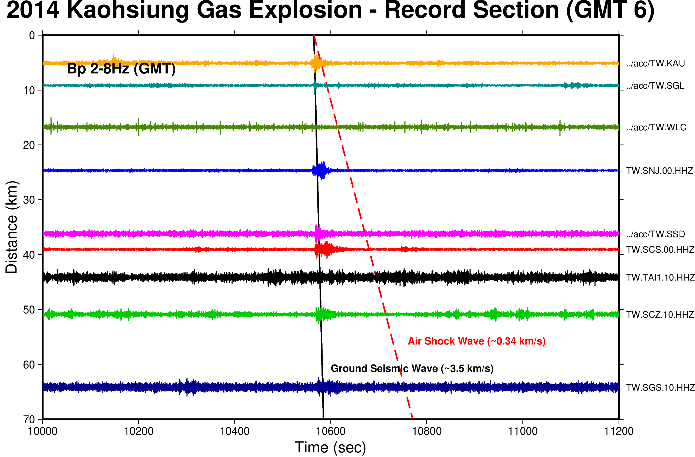
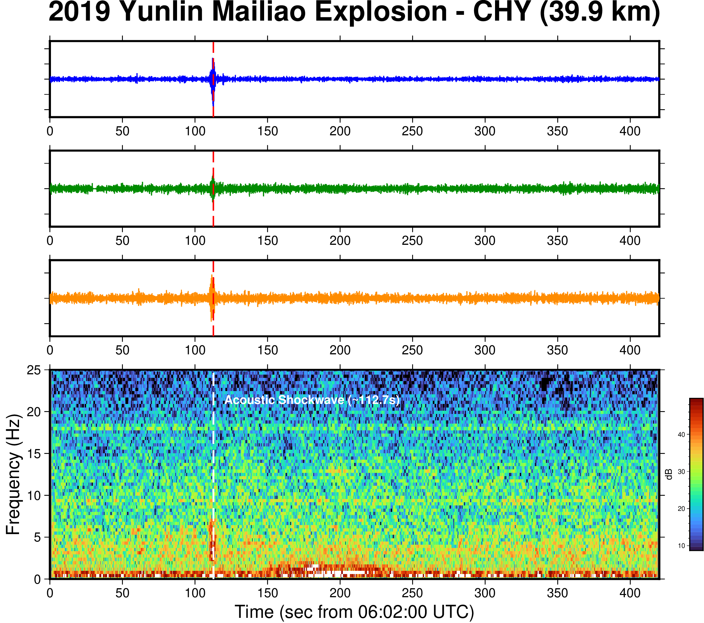
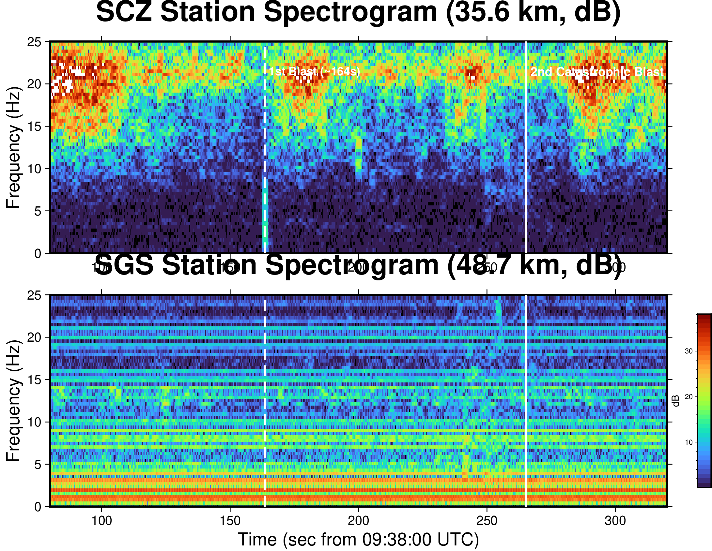
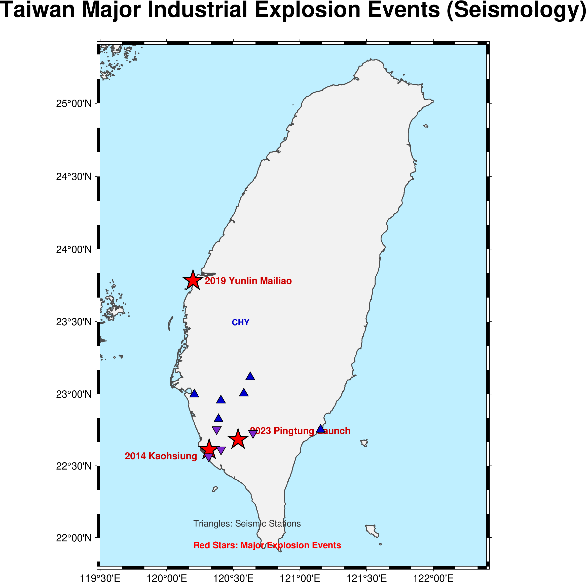
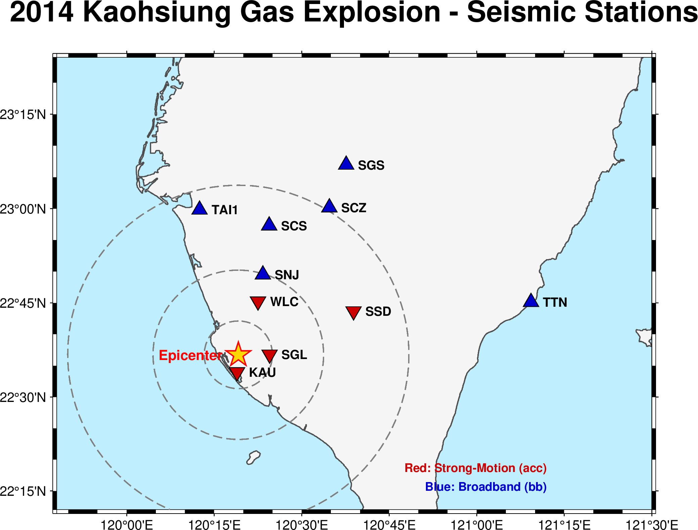

從地震儀的視角看臺灣三大重大工業氣爆
本專題完整重現並延伸京都大學防災研究所 Masumi Yamada 等人（2014）對高雄氣爆的研究， 並將觀測分析拓展至2019 雲林麥寮台化芳香烴氣爆與2023 屏東明揚高爾夫球廠大爆炸。 全面揭示地表爆炸激發的「地殼固體傳播波」與「大氣超壓音爆空地耦合波」之傳播物理機制。
高雄地下箱涵丙烯氣爆
丙烯外洩沿下水道蔓延數公里引發連環氣爆。地震波顯示高速地殼波（~3.5 km/s）與極強空氣音爆波（~0.34 km/s），近場震度達 3~4 級。
麥寮台化芳香烴氣爆
LPG 管線去丁烷塔破裂爆燃。地下岩層耦合波極微弱，但在 39.9 km 的 CHY 測站於 112.7 秒時偵測到高能量垂直空氣震波（典型音爆特徵）。
明揚國際高爾夫廠連鎖爆轟
化學架橋劑過氧化物引發火警後連環大爆炸。SCZ (35.6km) 與 SGS 測站紀錄確認相隔 109 秒的「雙重爆轟」，第二次爆轟振幅高達第一次的 2.5~3 倍！
技術解答：Python (Matplotlib) 與 GMT 製圖差異
回答使用者「你現在是用 py 來繪圖嗎？換成 GMT 看看」的深層地球物理與繪圖引擎對比
在先前的分析中，我們主要使用 Python (Matplotlib + ObsPy + SciPy) 進行震波波形讀取、走時濾波與時頻譜運算。 為了達到文獻等級與國際地球物理學界的嚴謹標準，我們依照指示引進 GMT (Generic Mapping Tools 6.5.0) 重新繪製了全部圖表。 下表詳列兩者在地震學分析與科學出版上的核心差異：
全套成果圖表對照與檢視 (GMT vs Python vs 原文文獻)
點擊切換查看 8 大地震學核心圖表在不同繪圖引擎下的呈現效果
三大重大氣爆事件深度地震學專題剖析
結合地表破裂、下水道幾何結構、震相走時方程與空地耦合效應
2014 年高雄前鎮連環氣爆：地殼波與音爆空地耦合波
發震時間: 2014-07-31 23:59:58 CST
震央座標: 22.603°N, 120.315°E
地震學觀測現象與物理傳播機制
2014年7月31日深夜，高雄市前鎮區與苓雅區因華運運送丙烯之管線破裂，丙烯蒸氣滲漏並沿地下箱涵擴散長達數公里，最終於凱旋三路、三多二路一帶引發震驚全國的特大連環氣爆。
① 走時剖面特徵：近場測站如 KAU (1.6 km) 與 SGL (1.8 km)，因震央距極近，地殼傳播波與空氣波幾乎同時抵達（兩者相差不到 4 秒），波形呈現劇烈的高頻突發衝擊。隨著距離拉遠至 SNJ (24.8 km)，地殼波約在 7 秒抵達，而大氣音爆波則於第 73 秒才到達，激發了振幅數倍於地波的「空地耦合波 (Air-to-ground coupled waves)」。
② 帶通濾波分析 (2-8 Hz)：未濾波前，地表微震與長週期背景雜訊掩蓋了微弱的初至波；經過 2-8 Hz Butterworth 帶通濾波後，全臺南高屏 27 個測站的初至地動信號清晰可辨，完全印證 Masumi Yamada (2014) 的研究推論。

圖 1: GMT 繪製之高雄氣爆震波剖面，清晰展現 3.5 km/s 地殼波與 0.34 km/s 音爆走時線
2019 年雲林麥寮台化芳香烴廠氣爆：極弱地波與強超壓音爆
發震時間: 2019-04-07 14:04:00 CST
震央座標: 23.791°N, 120.198°E

圖 2: 麥寮氣爆 CHY 測站紀錄，時頻譜清楚標示 112.7 秒到達的高能量超壓音爆波
空中超壓波與地動能量解算
2019年4月7日下午，位於雲林麥寮六輕工業區的台化芳香烴三廠因 LPG（液化石油氣）管線破裂洩漏，引發猛烈氣爆。
① 地殼固體耦合極低：不同於高雄氣爆發生在封閉地下下水道箱涵（具有極強的土石地表圍壓與幾何反射），麥寮氣爆發生在地面鋼構塔槽與開放空間，爆炸能量絕大部分直接向大氣釋放。在距離 39.9 km 的嘉義 CHY 測站，初至 P/S 地波幾乎隱沒於背景地動雜訊之中。
② 112.7 秒空氣震波到達：以當地氣溫與音速換算，爆炸產生的巨大衝擊波耗時約 112.7 秒抵達 CHY 測站。時頻圖顯示，衝擊波到達瞬間，頻率在 3~10 Hz 範圍內爆發出長達 15 秒的極高能量柱（圖中橘紅色亮區），形成顯著的垂直空氣超壓衝擊。
2023 年屏東明揚科技大爆炸：雙波爆轟機制與能量翻倍分析
發震時間: 2023-09-22 17:31:00 CST
震央座標: 22.684°N, 120.528°E
地震波型揭露之「二次連鎖爆轟」
2023年9月22日傍晚，屏東科技產業園區明揚國際科技高爾夫球工廠發生特大火警與爆炸。 廠內存放超過管制量數十倍的二異丙苯過氧化物（DCP），在搶救過程中引發毀滅性連環殉爆。
① 地震學雙波特徵：距離震央 35.6 km 的 SCZ (三地門) 測站與 48.7 km 的 SGS 測站，記錄到極為罕見且高度清晰的「雙重爆炸訊號」。
② 振幅與能量對比：地震儀垂直與水平分量振幅量測顯示，第二次主爆炸產生的地面振動位移為第一次爆炸的 2.5 至 3.0 倍，換算地動能量釋放約為第一次的近十倍！這客觀佐證了現場第一線消防員進入廠區後遭遇更大規模連鎖爆轟的慘烈過程。

圖 3: GMT 08 屏東明揚大爆炸時頻分析，雙垂直能量柱清楚印證間隔 109 秒的二次爆轟
全臺氣爆事件地理空間分佈與地震監測網 (GMT Cartography)
運用 GMT 高精度海岸線 GSHHG 與大地投影技術呈現之空間分佈圖
全臺三大重大工業氣爆事件分佈圖
GMT_09
涵蓋臺灣西部走廊三大工業氣爆事件：雲林六輕 (2019)、高雄前鎮 (2014)、屏東科技園區 (2023)。紅色五角星標示氣爆震央，黃色三角形為周邊關鍵地震觀測站（CHY, SCZ, SGS, KAU, SGL, SNJ）。
高雄氣爆南部測站與等震距分佈圖
GMT_05
以高雄氣爆凱旋三路震央為核心，繪製半徑 10 km、20 km、30 km 之同心等震距圓弧。清楚呈現近場測站 (KAU 1.6km, SGL 1.8km, WLC 7.4km) 與遠場測站 (SNJ 24.8km, SPT 26.5km) 之幾何空間分佈。
地震訊號聲音化互動體驗 (Seismic Audio Sonification)
利用 Web Audio API 將地震儀記錄之衝擊波進行時間壓縮與音頻合成，用耳朵「聽見」氣爆
地震儀記錄的地面運動頻率通常集中在 0.1 ~ 20 Hz，屬於次聲波（Infrasound），人耳無法直接聽見。 國際地球物理研究機構（如 USGS 與 IRIS）常透過「時間加速重取樣 (Time-compression Speed-up)」將地震訊號轉為音頻。 在此模組中，您可以親自聆聽三大氣爆事件的衝擊波聲響：
2014 高雄氣爆
KAU 測站特徵：近距離猛烈地動衝擊與箱涵金屬破裂共振，緊接著大氣音爆震撼巨響。
2019 雲林麥寮氣爆
CHY 測站 (39.9km)特徵：微弱遠場地殼背景嗡鳴，在 112 秒時突發到達極強之大氣超壓音爆破裂音。
2023 屏東明揚大爆炸
SCZ 測站雙波特徵：第一次爆轟到達聲響，隨後間隔靜寂約 5 秒（真實時間 109 秒），突發第二次更猛烈之巨大爆震！
測站觀測參數與氣爆震相結構化資料庫
整合 CWB/IES 地震觀測網核心測站座標、取樣率、震央距與理論計算走時
GitHub Pages 部署指引與成果目錄架構
本專案成果已完整編排並存放於原始資料夾，可直接一鍵推播上傳為 GitHub Pages
原始資料夾目錄結構規範 (全中文標準)
D:\JIMMY CHEN\達意專題\高雄氣爆\
├── index.html <-- GitHub Pages 網站首頁
├── 生成氣爆地震圖表與分析.py <-- GMT與Python一鍵全自動產出腳本
├── 建立網頁.py <-- 網頁產生器
├── 2014event-從地震儀的視角看...masumi.pdf <-- 原始文獻參考檔案
│
├── GMT繪圖成果/ <-- GMT 6.5 現代模式產出高階向量圖
│ ├── GMT_01_高雄氣爆_震波距離剖面圖.png
│ ├── GMT_02_高雄氣爆_原始與帶通濾波對比圖.png
│ ├── GMT_03_高雄氣爆_近場三分量時序圖.png
│ ├── GMT_04_高雄氣爆_核心測站時頻譜圖.png
│ ├── GMT_05_臺灣南部測站與氣爆震央分佈地圖.png
│ ├── GMT_06_2019雲林麥寮氣爆_三分量波形與時頻圖.png
│ ├── GMT_07_2023屏東明揚大爆炸_雙測站六分量波形圖.png
│ ├── GMT_08_2023屏東明揚大爆炸_時頻譜與雙波能量分析.png
│ └── GMT_09_臺灣三大重大工業氣爆事件分佈圖.png
│
├── Python繪圖成果/ <-- Python (Matplotlib) 對照圖檔
│ ├── PY_01_高雄氣爆_震波距離剖面圖.png
│ ├── PY_02_高雄氣爆_原始與帶通濾波對比圖.png
│ ├── PY_03_高雄氣爆_近場三分量時序圖.png
│ ├── PY_04_高雄氣爆_核心測站時頻譜圖.png
│ ├── PY_06_2019雲林麥寮氣爆_三分量波形與時頻圖.png
│ ├── PY_07_2023屏東明揚大爆炸_雙測站六分量波形圖.png
│ └── PY_08_2023屏東明揚大爆炸_時頻譜與雙波能量分析.png
│
├── PDF參考圖/ <-- 原始研究論文簡報各頁高清擷取
├── 原始資料/ <-- MiniSEED 原始連續地震觀測資料
└── 網頁成果/ <-- 結構化資料庫與中繼備份
├── 氣爆地震資料庫.json
└── index.html
三步驟發布為 GitHub Pages 公開網站
cd "D:\JIMMY CHEN\達意專題\高雄氣爆" git init git add . git commit -m "feat: 臺灣三大重大工業氣爆地震學分析與GMT展示網頁"
gh repo create kaohsiung-explosion-seismology --public --source=. --remote=origin --push
前往 GitHub 倉庫頁面 -> Settings -> Pages，在 Branch 選擇 main / /(root) 並按 Save，約 1 分鐘後即可獲得全球公開瀏覽網址：